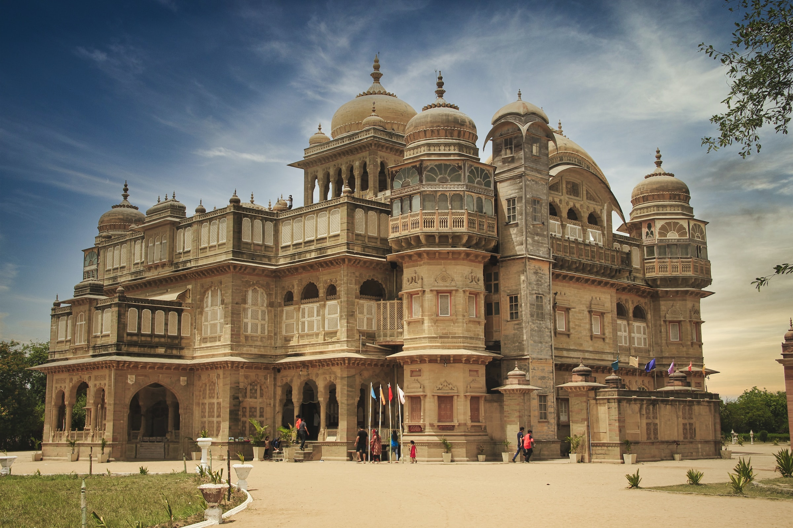
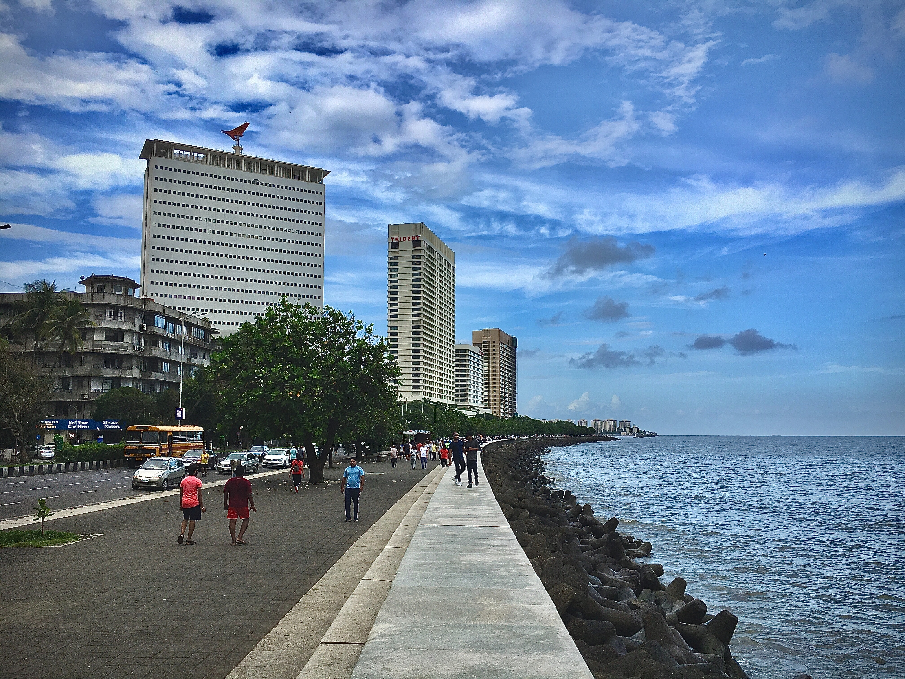
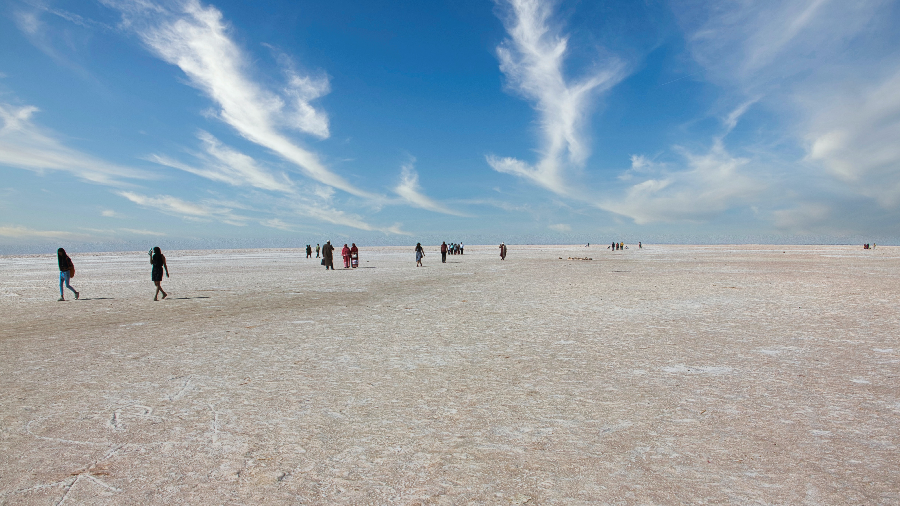
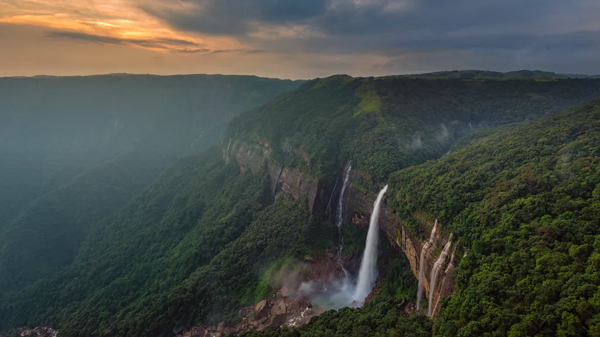
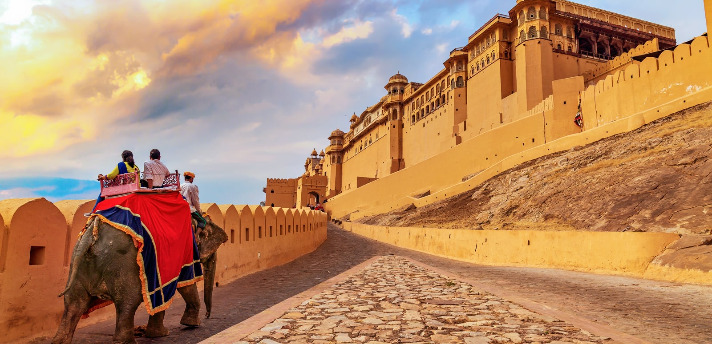

Tourism in India is a significant and diverse industry that attracts millions of visitors from around the world each year. India's rich cultural heritage, historical landmarks, diverse landscapes, and vibrant traditions make it a popular destination for tourists seeking a wide range of experiences
Best tour Packages offers for you

The Gateway of India is a monumental arch located in Mumbai (formerly known as Bombay), Maharashtra, India. It is one of Mumbai's most famous landmarks and a significant historical site.The Gateway of India was built during the British colonial period in India and was completed in 1924. It was designed to commemorate the landing of King George V and Queen Mary in Mumbai in 1911, as well as to symbolize the grandeur of the British Empire.The architectural style of the Gateway of India is Indo-Saracenic, which blends elements of Indian and Islamic architecture with European styles.

The Howrah Bridge also known as Rabindra Setu, is an iconic bridge in Kolkata, India. It's a marvel of engineering that spans the Hooghly River, connecting Kolkata with Howrah. The bridge has a unique design with no piers in the water, allowing smooth navigation. It's made of strong steel and was built without nuts and bolts, using rivets.The Howrah Bridge is not just a means of transportation but a symbol of Kolkata's identity. It's famous for its pedestrian walkways on both sides, offering stunning views of the river and the city. The bridge has appeared in movies and art, making it a cultural landmark.

The Kerala Backwaters are a network of serene waterways, canals, lakes, and lagoons that meander through the southwestern state of Kerala, India. This unique and tranquil landscape is often referred to as the "Venice of the East." The backwaters are an integral part of Kerala's culture and are known for their breathtaking beauty and peaceful ambiance. The backwaters offer a distinct travel experience, allowing visitors to explore the lush greenery, coconut groves, paddy fields, and small villages that dot the water's edge.

Ladakh is a region located in the northernmost part of India, nestled amidst the towering peaks of the Himalayas and the Karakoram Range. Often referred to as the "Land of High Passes," Ladakh is known for its breathtaking landscapes, ancient monasteries, and unique cultural heritage.Iconic natural attractions in Ladakh include Pangong Lake, a shimmering blue lake surrounded by barren mountains; Nubra Valley, known for its sand dunes and double-humped Bactrian camels; and the Khardung La Pass, one of the highest motorable passes in the world.
Notable Attractions of India
The Victoria Memorial ‚ú®üèõÔ∏è A majestic ode to Queen Victoria's legacy, this iconic monument stands tall in Kolkata, India. Its exquisite architecture and lush gardens offer a glimpse into history's embrace

Nature's Paradise üåÑüçÉ A serene hill station nestled in the Nilgiri Hills of India, Ooty enchants with its misty mountains, lush tea gardens, and charming colonial vibe.
Qutub Minar: Echoes of History üïå‚ú® Standing tall in Delhi, India, the Qutub Minar is a UNESCO World Heritage Site and a masterpiece of Indo-Islamic architecture.

The Golden Temple, also known as Sri Harmandir Sahib, is a renowned Sikh place of worship located in Amritsar, Punjab, India. It is the most significant and holiest Gurdwara (Sikh temple) for Sikhs worldwide
The Ellora Caves are authentic in terms of the forms and designs, materials and substance, and locations and setting of paintings, rock-cut architecture, sculptures for Buddhism, Brahmanism, and Jainism
Standing tall against the horizon, the Statue of Unity is a monumental tribute to Sardar Vallabhbhai Patel, India's visionary leader. This colossal masterpiece not only honors his pivotal role in shaping the nation but also celebrates unity in diversity. Set against the backdrop of the Narmada River
Gaze Upon Nature's Grandeur in Srinagar which offers a breathtaking panorama of snow-capped peaks that touch the sky. The towering mountains, adorned with a dusting of glistening snow, create a stunning contrast against the serene Dal Lake

Varanasi is a city on the Ganges river in northern India that has a central place in the traditions of pilgrimage, death, and mourning in the Hindu world.
Hawa Mahal is a palace built from red and pink sandstone and lies in Jaipur’s Pink City.It has a curved architecture that leans at an 87 degree angle, and a pyramidal shape which has helped it stay erect for centuries.
The Lotus Temple, located in Delhi, India, is a Bahá'í House of Worship that was dedicated in December 1986, costing $10 million. Notable for its flowerlike shape, it has become a prominent attraction in the city
Charminar is an iconic building with four minarets. It stands at the intersection of the four main streets in Hyderabad. It is an old lime-mortar and granite structure, still intact to the faith of the people.

The Red Fort has been a symbol of power since the reign of Shah Jahan, has witnessed the change in Indian history to British rule, and was the place where Indian independence was first celebrated, and is still celebrated today
Vadakkunnathan Temple is a very popular Shiva temple of South India, located in the state of Kerala. Lord Shiva is recognized as Vadakkunnathan here. It is said that Vadakkunnathan Temple is the first temple to be constructed by Lord Parshurama
Jama Masjid is Delhi's principal mosque, the place where the city's Muslims traditionally gather for Friday communal prayer.The Jama Masjid was regarded as a symbolic gesture of Islamic power across India, well into the colonial era.
Buddhism is one of the most-loved religions in the world won’t be incorrect. India, of course, is the proud home to Bodh Gaya, where Lord Buddha attained enlightenment in the 5th century and gave his first preaching in Saranth, Varanasi.